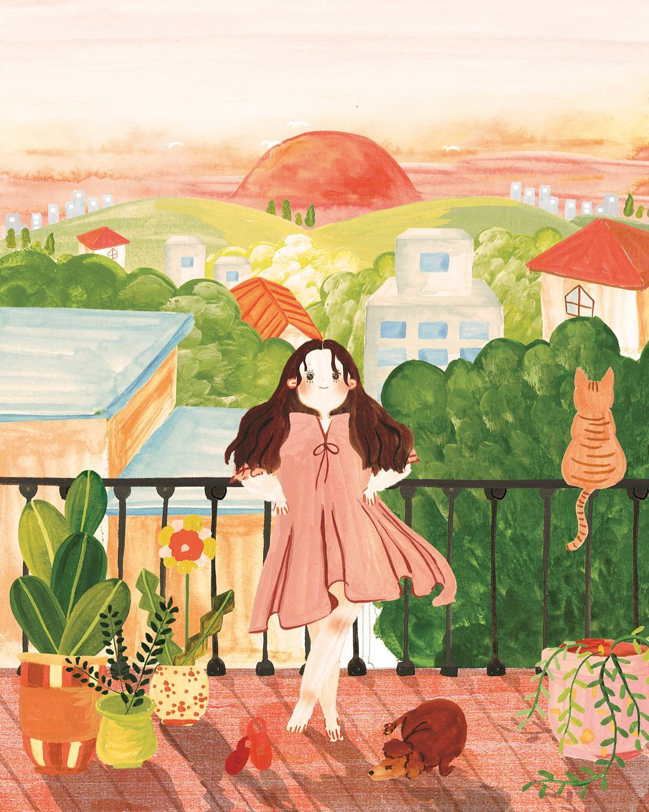

Poem
메인
마이페이지
로그아웃
시집 ' 별 헤는 밤 '

별 헤는 밤
윤 동 주
하늘과 바람과 별과 시를 노래하고 싶어서 만든 시입니다.
127
관련 시
편지
윤동주
임을 그리워하는 마음이 담긴 시이다.
130 좋아요
호주머니
윤동주
호주머니에 물건이 가득 찬 것을 재미있게 표현한 시이다.
152 좋아요
새로운 길
윤동주
새로움을 운율감있게 표현한 시이다.
95 좋아요
봄
윤동주
봄을 드러내는 일상적인 시이다.
71 좋아요
눈
윤동주
눈의 계절을 노래하는 시이다.
118 좋아요
더 보기